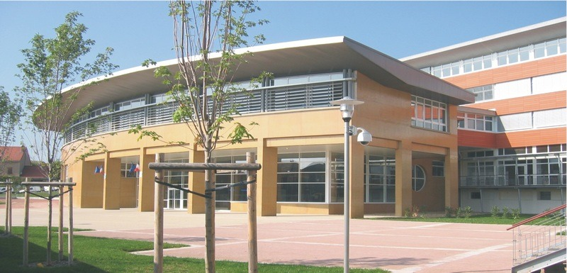

Mes Formations
Vous trouverez ici les différentes formations que j'ai suivies lors de mon parcours scolaire. Je présenterai brièvement les établissements et les cursus que j'ai intégrés.
Les formations décrites commencent à partir de mon entrée en filière professionnelle.
Formation 1 – Lycée Carnot (Roanne)
Seconde NTE (Numérique et Transitions Énergétiques)
Dans cette formation, j'ai pu découvrir deux corps de métiers. L'un concernait les métiers de l'électricité et des transitions énergétiques. Ce domaine était intéressant, mais beaucoup moins captivant à mes yeux que la partie consacrée aux systèmes numériques.
C'est cette découverte qui m'a donné l'envie de continuer sur cette voie. L'année était centrée sur l'acquisition de connaissances permettant d'explorer la filière (comme par exemple le câblage RJ45).
Cette année de découverte a donc été décisive pour le reste de mon parcours.
Formation 2 – Lycée Carnot (Roanne)
Première et Terminale SN (Systèmes Numériques)
Lors de ces deux années scolaires, j'ai pu approfondir mes connaissances dans la filière que j'avais choisie. Au sein de ce lycée, j'ai découvert plus en profondeur le monde des normes qui régissent ce métier, ainsi que d'autres aspects techniques.
J'ai par exemple étudié la fibre optique et son déploiement, tout en découvrant les protocoles réseaux fondamentaux pour la suite de mes études (FTP, SFTP, DHCP, DNS, etc.).
Très formatrice, cette période m'a également permis de me familiariser avec des logiciels de simulation réseau tels que Packet Tracer.
En résumé, ces deux années m'ont permis d'acquérir les bases indispensables à ma formation actuelle.

Formation 3 – Lycée Albert Londres (Cusset)
BTS SIO (Services Informatiques aux Organisations) - En cours -
Cette formation étant en cours, je ne pourrai pas encore décrire tout ce qu'elle m'a apporté dans son entièreté. Cependant, ce que j'ai pu y découvrir jusqu'à présent est réellement passionnant.
Actuellement en spécialité SISR (Solutions d'Infrastructure, Systèmes et Réseaux), j'ai commencé à approfondir mes connaissances dans ce domaine, notamment en cybersécurité, où j'ai pu apprendre énormément de choses.
Côté réseau, les bases sont grandement approfondies, avec l'étude de nouveaux protocoles (POP3, par exemple), mais aussi en gagnant de l'expérience pratique grâce aux équipements fournis par la formation (hubs, interfaces réseau, câblage).
J'ai conscience qu'il me reste encore beaucoup à apprendre, et j'espère que la suite de ce BTS me sera d'autant plus bénéfique pour acquérir de l'expérience dans le domaine que j'ai choisi.